suppressPackageStartupMessages({
library( tidyverse )
library( Matrix )
library( sparseMatrixStats )
library( Seurat ) })
ReadMtx( "~/Downloads/ifnagrko/ifnagrko_raw_counts.mtx.gz",
"~/Downloads/ifnagrko/ifnagrko_obs.csv",
"~/Downloads/ifnagrko/ifnagrko_var.csv",
cell.sep=",", feature.sep=",", skip.cell=1, skip.feature=1,
mtx.transpose=TRUE) -> count_matrixDiffusion distances
Load example data
Before getting into the topic, we load the usual example data and performing standard preprocessing
count_matrix %>%
CreateSeuratObject() %>%
NormalizeData() %>%
FindVariableFeatures() %>%
ScaleData() %>%
RunPCA( npcs=20 ) %>%
FindNeighbors( dims=1:20 ) %>%
FindClusters( resolution=0.5 ) %>%
RunUMAP( dims=1:20 ) -> seuWarning: Feature names cannot have underscores ('_'), replacing with dashes
('-')Normalizing layer: countsFinding variable features for layer countsCentering and scaling data matrixPC_ 1
Positive: Apoe, Aldoc, Sparcl1, Sdc4, Ptn, Cmtm5, Glul, Gpr37l1, Fxyd1, Atp1b2
S100a1, Slc4a4, Slc1a3, Prxl2a, F3, Itm2b, Mt1, Rgcc, Prdx6, Sfxn5
Sat1, Scrg1, Dbi, Hes5, Luzp2, Plaat3, Pla2g7, Sash1, Plpp3, Sparc
Negative: Tubb5, Sox11, Tubb3, Stmn1, Jpt1, Hmgb3, Ptma, Sox4, Dlx2, Cd24a
Igfbpl1, Dlx6os1, Map1b, Stmn2, Abracl, Tmsb4x, Lmnb1, Cdca7, Ccnd2, Elavl4
Cdk4, Dcx, Arx, Uchl1, EYFP, Celf4, Dlx5, Nrxn3, H1fx, Hmgn2
PC_ 2
Positive: Ctss, C1qc, Laptm5, Csf1r, Trem2, C1qa, Cx3cr1, C1qb, Tyrobp, Ly86
Fcer1g, Siglech, Selplg, Fcrls, Tmem119, Fcgr3, Apbb1ip, Unc93b1, Cd53, Lpcat2
Spi1, Pld4, Olfml3, Irf8, Ctsh, Aif1, Cd300c2, Fyb, Otulinl, Mylip
Negative: Rorb, Cldn10, Clu, Mt3, Ntsr2, Mfge8, S1pr1, Id4, Slc1a2, Acsl6
Plpp3, Sox9, Ddah1, Bcan, Cxcl14, Btbd17, Mlc1, Cspg5, Fjx1, Aqp4
Ntm, Acsl3, Gabrb1, Tspan7, Lsamp, Chst2, Mt2, Lhx2, Slc39a12, Glud1
PC_ 3
Positive: Atp1a3, Camk2b, Snhg11, Syt1, Nrip3, Kcnj4, Scg2, Snap25, Dnm1, Pcp4
Icam5, Ndrg4, Eef1a2, Eno2, Ano3, Ryr2, Arpp21, Ptk2b, Gng4, Kcna4
Penk, Slc4a10, Snca, Gad1, Rprml, Grin2a, C1qtnf4, Shisa8, Camk2a, Kcnb2
Negative: Hmgb2, Top2a, Pbk, Birc5, Mki67, Cdk1, Cdca8, Spc24, Cenpf, Spc25
Prc1, Rrm2, Mdk, Nusap1, Tpx2, Cdca3, Knl1, Ckap2l, Esco2, Aurkb
Cenpm, Ccna2, Bub1, Cks2, Kif11, Hist1h3c, Hist1h1b, Hmmr, Pclaf, Fbxo5
PC_ 4
Positive: C1qc, C1qa, Ctss, Trem2, Csf1r, C1qb, Cx3cr1, Laptm5, Fcer1g, Tyrobp
Ly86, Siglech, Selplg, Fcrls, Fcgr3, Hexb, Spi1, Cd53, Itgb5, Pld4
Ptgs1, Cd300c2, Aif1, Irf8, Fyb, Itgam, Cyth4, Ltc4s, Otulinl, Cd37
Negative: Frzb, Apod, Npy, Plp1, Vtn, Foxd3, Wnt6, Nr2f2, Edil3, Sox10
Gsn, Matn4, Fbln2, Aspa, Aqp1, Igf1, Plat, Lpar1, Igfbp4, Erbb3
Fabp7, Plppr4, Ptgds, Col23a1, Alx3, Hey2, Cd59a, Fam3c, Scd1, Mybpc1
PC_ 5
Positive: Stmn2, Igfbpl1, Cd24a, Nrep, Sox4, Map1b, Stmn4, Tubb3, Shtn1, Dlx6os1
Dcx, Ly6h, Sox11, Jpt1, Mpped2, Stmn1, Plxna4, Pbx3, Elavl4, Uchl1
Runx1t1, Cald1, Foxp2, Dlx2, Gad2, Celf4, Pfn2, Dlx5, Sp8, Tubb5
Negative: Top2a, Pbk, Birc5, Mki67, Spc25, Cdk1, Prc1, Nusap1, Spc24, Esco2
Tpx2, Knl1, Aurkb, Cenpf, Cdca8, Ckap2l, Kif11, Cdca3, Hist1h3c, Hmmr
Ccna2, Bub1, Incenp, Hist1h2af, Ndc80, Cit, Fbxo5, Kif4, Sgo1, Kif22 Computing nearest neighbor graphComputing SNNModularity Optimizer version 1.3.0 by Ludo Waltman and Nees Jan van Eck
Number of nodes: 18302
Number of edges: 616069
Running Louvain algorithm...
Maximum modularity in 10 random starts: 0.9191
Number of communities: 19
Elapsed time: 4 secondsWarning: The default method for RunUMAP has changed from calling Python UMAP via reticulate to the R-native UWOT using the cosine metric
To use Python UMAP via reticulate, set umap.method to 'umap-learn' and metric to 'correlation'
This message will be shown once per session15:32:17 UMAP embedding parameters a = 0.9922 b = 1.11215:32:17 Read 18302 rows and found 20 numeric columns15:32:17 Using Annoy for neighbor search, n_neighbors = 3015:32:17 Building Annoy index with metric = cosine, n_trees = 500% 10 20 30 40 50 60 70 80 90 100%[----|----|----|----|----|----|----|----|----|----|**************************************************|
15:32:20 Writing NN index file to temp file /tmp/Rtmpph7jNv/file504c155b54113
15:32:20 Searching Annoy index using 1 thread, search_k = 3000
15:32:28 Annoy recall = 100%
15:32:28 Commencing smooth kNN distance calibration using 1 thread with target n_neighbors = 30
15:32:29 Initializing from normalized Laplacian + noise (using RSpectra)
15:32:33 Commencing optimization for 200 epochs, with 776086 positive edges
15:32:43 Optimization finishedUMAPPlot( seu, label=TRUE ) + coord_equal()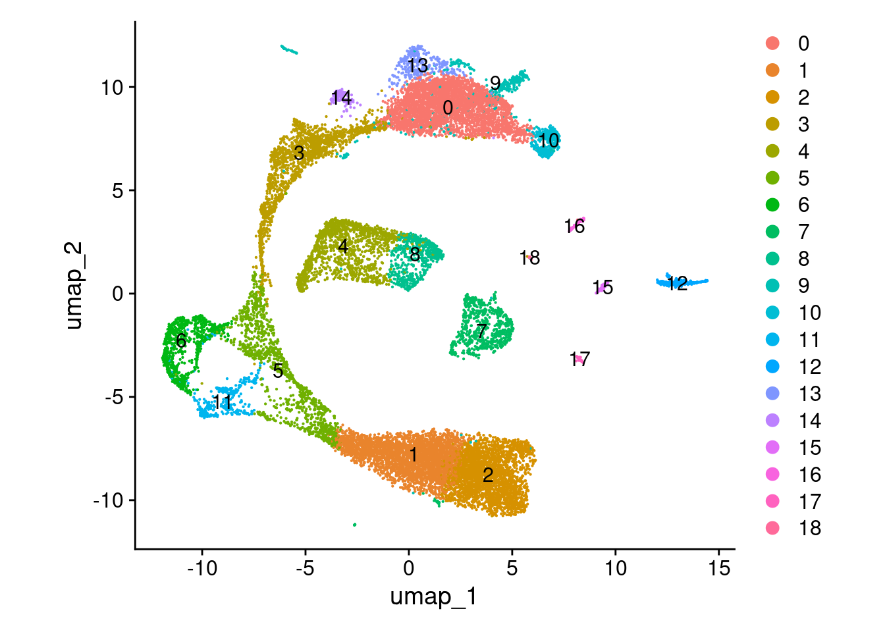
Nearest neighbors
In this lesson, we will mainly work with the nearest neighbor data. Seurat has already calculated this but we do this again here:
FNN::get.knn( Embeddings( seu, "pca" ), k=15 ) -> nn
head( nn$nn.index) [,1] [,2] [,3] [,4] [,5] [,6] [,7] [,8] [,9] [,10] [,11] [,12]
[1,] 2504 4613 2817 2697 4423 3301 11993 17335 782 7322 6832 710
[2,] 12412 11120 9817 6433 11238 13771 1477 11146 11275 16123 16751 5537
[3,] 10073 9512 3943 7030 8300 10489 5189 7207 3050 10479 5624 9527
[4,] 12407 2608 16034 8035 1662 4011 3937 10428 16823 5610 16173 3883
[5,] 10060 10135 3874 5333 4318 4437 7573 16224 11594 6338 8306 17955
[6,] 13639 11873 16237 12423 17155 2140 8348 1213 5423 2691 12754 5443
[,13] [,14] [,15]
[1,] 4421 2209 5197
[2,] 9427 1947 8633
[3,] 3086 1516 8733
[4,] 1858 4214 16949
[5,] 14159 5662 13930
[6,] 185 3376 273Adjacency matrix
We next construct the adjacency matrix of the undirected nearest neighbor graph. To connect each vertex to its \(i\)th nearest neighbor, we need the following edges:
ncells <- ncol(seu)
i <- 3
cbind( vertex_A=1:ncells, vertex_B=nn$nn.index[,i] ) %>% head() vertex_A vertex_B
[1,] 1 2817
[2,] 2 9817
[3,] 3 3943
[4,] 4 16034
[5,] 5 3874
[6,] 6 16237We can use this as indices of the matrix cells we want to set to one and thus construct a sparse matrix
sparseMatrix( i=1:ncells, j=nn$nn.index[,i], x=1, dims=c(ncells,ncells) ) %>% summary() %>% head()18302 x 18302 sparse Matrix of class "dgCMatrix", with 18302 entries
i j x
1 2697 1 1
2 2817 1 1
3 7322 1 1
4 11993 1 1
5 9427 2 1
6 9817 2 1Adding up on such matrix for i running from 1 to 15 gives us the adjacency matrix
adjm <- sparseMatrix( i=integer(), j=integer(), x=numeric(), dims=c(ncells,ncells) ) # zero matrix
for( i in 1:ncol(nn$nn.index) ) {
adjm <- adjm + sparseMatrix( i=1:ncells, j=nn$nn.index[,i], x=1, dims=c(ncells,ncells) ) }
summary(adjm) %>% head()18302 x 18302 sparse Matrix of class "dgCMatrix", with 274530 entries
i j x
1 174 1 1
2 710 1 1
3 782 1 1
4 1121 1 1
5 1769 1 1
6 2504 1 1We make the matrix symmetric
adjm <- adjm + t(adjm)Now, some matrix entries have become 2 rather than 1. We set everything back to 1:
adjm@x[] <- 1Now, we have an adjacency matrix for our nearest neighbor graph.
Random walk
We now define a random walk on our graph as follows: A “walker” (or: “token”) starts at a vertex \(i\). In each time step, it choses one of the vertex’s neighbors at random and moves there. What is the probability of the walker being on vertex \(j\) after \(\ell\) steps?
We represent the walker being at vertex \(i\) with the unit vector in direction \(i\), i.e., the vector \(\vec e_i\), with a 1 at component \(i\) and zero elsewhere. The transition matrix \(T\) with elements \(T_{ij}\) tells us the probability of the walker moving to vertex \(j\) in a step if it was before at vertex \(i\):
\[ T_{ij} = A_{ij} \Big/ \sum_{j'}{A_{ij'}}. \] The division normalizes the probabiliities by dividing by the number of neighbors that the walker can chose from.
trm <- adjm / rowSums(adjm)Check normalization:
rowSums(trm) %>% head()[1] 1 1 1 1 1 1To try this out, we pick a cell close to the point (-6,6) in the UMAP:
cell <- which.min( ( Embeddings(seu,"umap")[,1] + 6 )^2 + ( Embeddings(seu,"umap")[,2] - 6 )^2 )
cellCGGGCATGTTGGGAAC-WT_4mo_2021_001
14741 Here’s a UMAP plot of this cell and it’s neighbors:
Embeddings(seu,"umap") %>%
as_tibble() %>%
mutate( w = case_when(
row_number() == cell ~ "cell",
adjm[cell,] == 1 ~ "neighbor",
TRUE ~ "other"
)) %>%
ggplot +
geom_point( aes( x=umap_1, y=umap_2, col=w ), size=.3 ) + coord_equal() +
scale_color_manual( values=c("darkgreen","magenta","#00000006"))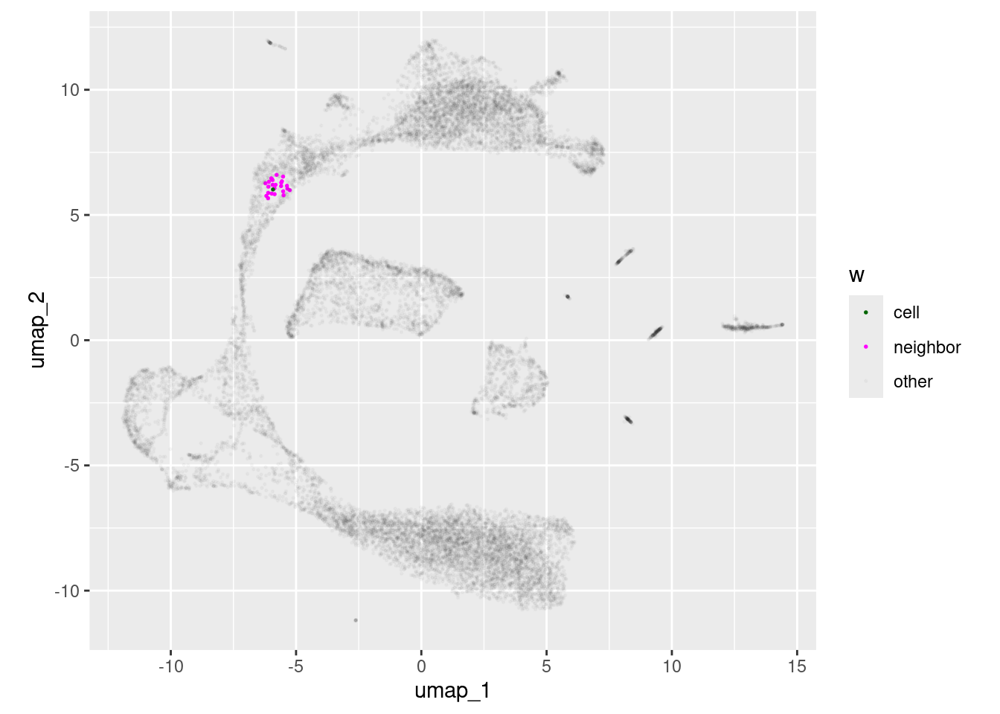
Let’s perform 10 steps. We start with a sparse vector with a single 1 at the chosen cell’s index and 0 elsewhere, then multiply this 10 times with \(T\):
u <- sparseVector( i=cell, x=1, length=ncells )
for( i in 1:10 )
u <- u %*% trmWe first check whether u is still normalized:
sum(u)[1] 1Here’s a plot of \(\vec{u}=\vec{e}_i^\top T^{10}\).
Embeddings(seu,"umap") %>%
as_tibble() %>%
mutate( u = as.vector(u) ) %>%
ggplot +
geom_point( aes( x=umap_1, y=umap_2, col=u ), size=.3 ) + coord_equal() +
scale_color_viridis_c(direction=-1)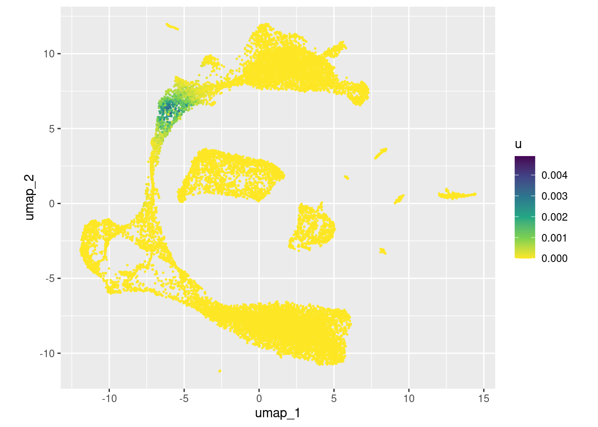
Exponantiating the transition matrix
Calculating \(\ell\) steps by repeated multiplication is wasteful. We should use a matrix exponential.
As preparation for this, we define the diagonal “degree matrix” \(D\), that contains the vertex degrees: \[ D_{ij} = \delta_{ij} \sum_{j'} A_{ij'}. \]
Now, we have: \[ T = D^{-1}A.\]
\(T\) is a row-stochastic matrix, i.e., its values are all non-negative and its rows sum to 1.
The probability mass vector for a walker starting at vertex \(i\) after one step is \(\vec{e}_i^\top T\), and after \(\ell\) steps, \(\vec{e}_i^\top T^\ell\).
To calculate \(T^\ell\), we will need the eigendecomposition of the symmetrized transition matrix \(\tilde T = D^{-1/2} T D^{-1/2}\): \[ \tilde T = U\Lambda U^\top,\] with the columns of \(U\) containing the eigenvectors of \(\tilde T\) and the diagonal matrix \(\Lambda\) containing the eigenvalues.
With this, we get \[ \begin{align} T^\ell &= \left(D^{-1} A\right)^\ell \\ &= D^{-1/2} \left(D^{-1/2} A D^{-1/2}\right)^\ell D^{1/2} \\ &= D^{-1/2} \left(U \Lambda U^T\right)^\ell D^{1/2} \\ &= \underbrace{D^{-1/2} U \Lambda^\ell}_{=X_\ell} U^T D^{1/2}. \end{align} \]
We construct \(D\)
degdiag <- sparseMatrix( i=1:ncells, j=1:ncells, x=rowSums(adjm) )We also write down \(D^{-1}\), \(D^{1/2}\) and \(D^{-1/2}\):
invdegdiag <- sparseMatrix( i=1:ncells, j=1:ncells, x=1/rowSums(adjm) )
sqrtdegdiag <- sparseMatrix( i=1:ncells, j=1:ncells, x=sqrt(rowSums(adjm)) )
invsqrtdegdiag <- sparseMatrix( i=1:ncells, j=1:ncells, x=1/sqrt(rowSums(adjm)) )Now we get the eigensystem of \(\tilde T\), requesting the 100 eigenvalues that are largest by magnitude:
eigtrm <- RSpectra::eigs_sym( invsqrtdegdiag %*% adjm %*% invsqrtdegdiag, k=100 )Now, we can calculate \(\vec e_i^\top T^\ell\) as follows:
We calculate first \(X_\ell = D^{-1/2} U \Lambda^\ell\):
invsqrtdegdiag %*% eigtrm$vectors %*% diag( eigtrm$values^10 ) %>% as.matrix() -> x10
dim(x10)[1] 18302 100Note that the matrix \(X_\ell\) has been trimmed to only the first 50 columns. That is ok because the factor \(\Lambda^\ell\) gets small quickly and therefore, the columns stay close to zero once we get past the first few on the left:
plot( colSums(x10^2) )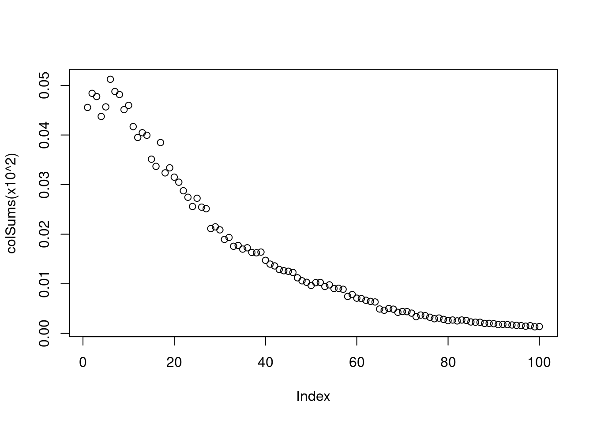
Of course, this only works for \(\ell \gg 1\) and with \(\ell=10\) we may have only just enough steps for the approximation becoming valid.
We take the row of \(X_\ell\) that corresponds to our cell and multiply this with \(U^\top D^{1/2}\) to get \(e_i^\top X_\ell U^\top D^{1/2}=e_i^\top T^\ell\):
x10[cell,] %*% t(eigtrm$vectors) %*% sqrtdegdiag %>% as.vector() -> u10Here is a plot of that vector:
Embeddings(seu,"umap") %>%
as_tibble() %>%
mutate( u = u10 ) %>%
ggplot +
geom_point( aes( x=umap_1, y=umap_2, col=u ), size=.3 ) + coord_equal() +
scale_color_viridis_c(direction=-1)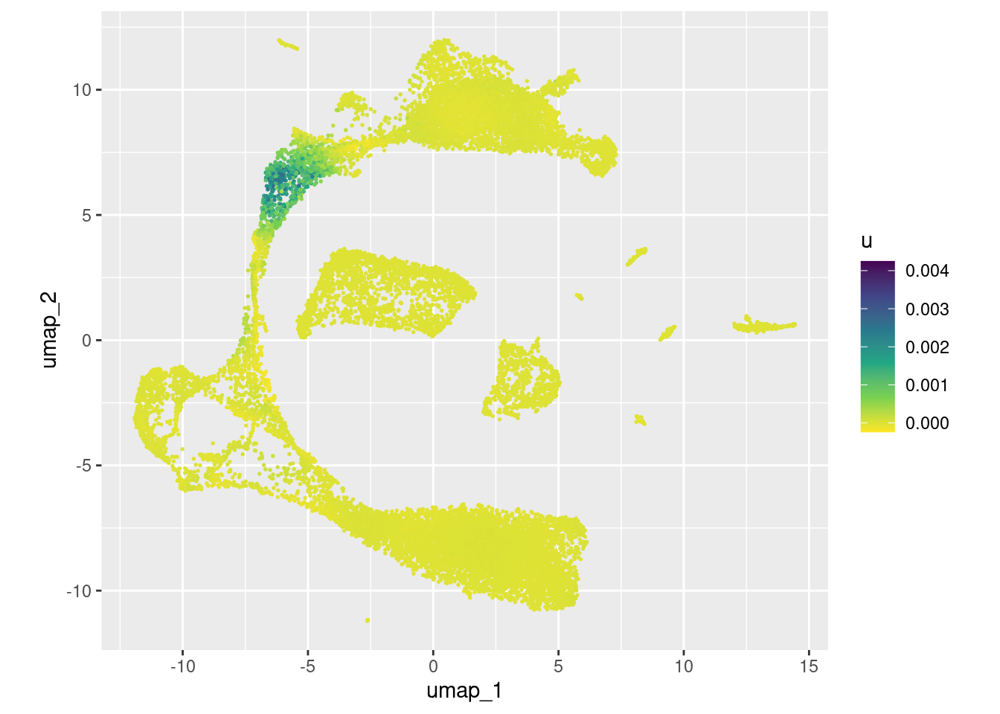
This looks quite similar as the plot we made before.
Here’s a comparison of the two results
plot( u, u10, asp=1, cex=.2, xlab="exact calculation", ylab="using top 100 eigenvectors" )
abline( 0, 1, col="#00000020" )
abline( h=0, v=0, col="#00000020" )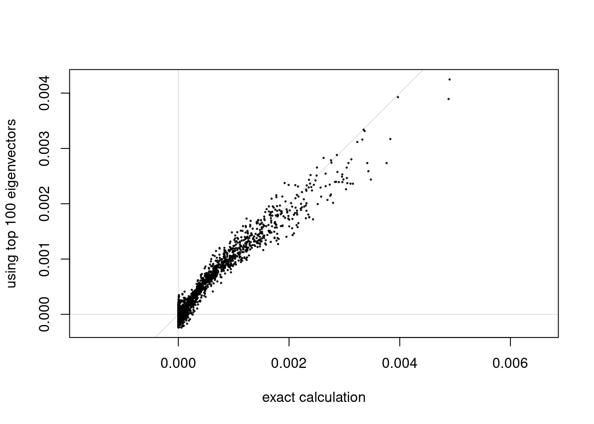
Diffusion distances
We now define a new distance metrix for our cells. Intuitively: To quantify the distance between two cells \(i\) and \(j\), we start random walks at both cells, evolve them for \(\ell\) steps, and then ask about the overlap between the resulting probability vectors.
We might therefore use \[ \left\| e_i^\top T^\ell - e_j ^\top T^\ell \right\|_2, \] i.e., the Euclidean distance between rows \(i\) and \(j\) of \(T^\ell\) as the distance between cells \(i\) and \(j\).
Note that the number of steps, \(\ell\), selects a “length scale” at which the that distance is informative.
There is a practical difficulty in using this definition, though: When multiplying the small \(n\times k\) matrix \(X_\ell\) with the transpose of the \(n\times k\) eigenvector matrix \(U\) (with \(n\) being the number of cells and \(k\) being the number of eigenvectors that have been calculated) our data blows up to an unwieldy \(n\times n\) matrix.
We can avoid this by using the rows of \(X_\ell\) instead of the rows of \(T^\ell\), and therefore define:
The \(\ell\)-steps diffusion distance between cells \(i\) and \(j\) is \[ d_{\ell,ij} = \left\| e_i^\top X_\ell - e_j^\top X_\ell \right\|_2, \]
Note that this is also \[ d_{\ell,ij} = \left\| \left( e_i^\top T^\ell - e_i^\top T^\ell\right) D^{-1/2} \right\|_2, \] i.e., the components of the resulting probability vectors get reweighted by \(D^{-1/2}\) before calculating the norm of the difference. If we accept this (somewhat unmotivated) reweighting, because it does not change much (as the vertex degrees do not differ that much from each other), we have a computationally efficient way of calculating \(d_{\ell,ij}\): All we need is \(X_\ell\).
By calculating the Euclidean distance of every row of \(X_\ell\) to the row for our selected cell, we get the \(\ell\)-step diffusion distance of that cell to all other cells:
Embeddings(seu,"umap") %>%
as_tibble() %>%
mutate( d = sqrt( rowSums( t( t(x10) - x10[cell,] )^2 ) ) ) %>%
arrange(-d) %>%
ggplot +
geom_point( aes( x=umap_1, y=umap_2, col=d ), size=.3 ) + coord_equal() +
scale_color_viridis_c(direction=-1)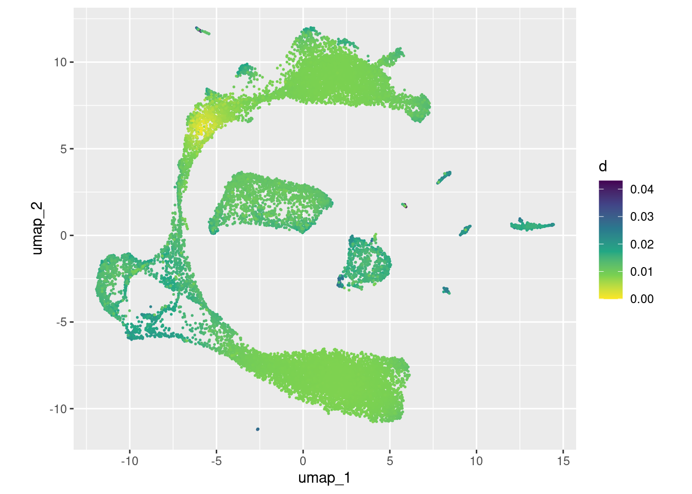
Below, this plot is repeated for several values of \(\ell\). (But remember that our approximation error is larger for \(\ell \lesssim 10\).)
for( l in c(3, 10, 30, 100, 300, 1000 ) ) {
invsqrtdegdiag %*% eigtrm$vectors %*% diag( eigtrm$values^l ) %>% as.matrix() -> xm
print(
Embeddings(seu,"umap") %>%
as_tibble() %>%
mutate( d = sqrt( rowSums( t( t(xm) - xm[cell,] )^2 ) ) ) %>%
arrange(-d) %>%
ggplot +
geom_point( aes( x=umap_1, y=umap_2, col=d ), size=.3 ) + coord_equal() +
scale_color_viridis_c(direction=-1) + ggtitle( sprintf( "%d steps", l ) ) )
}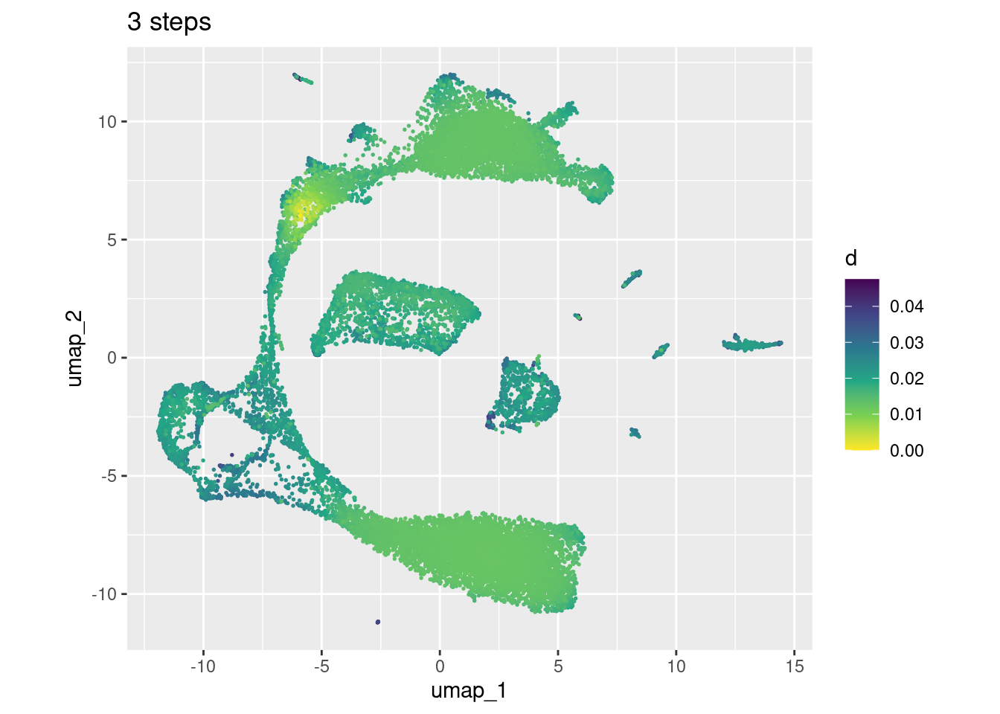
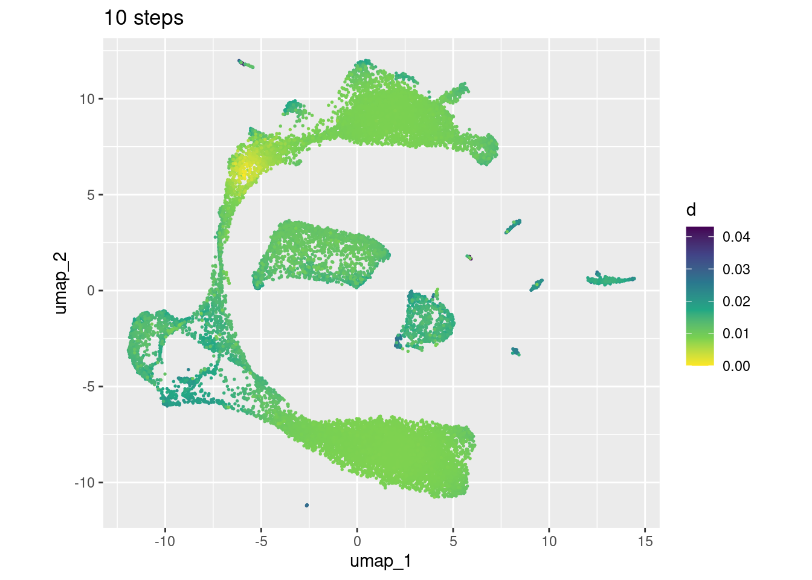
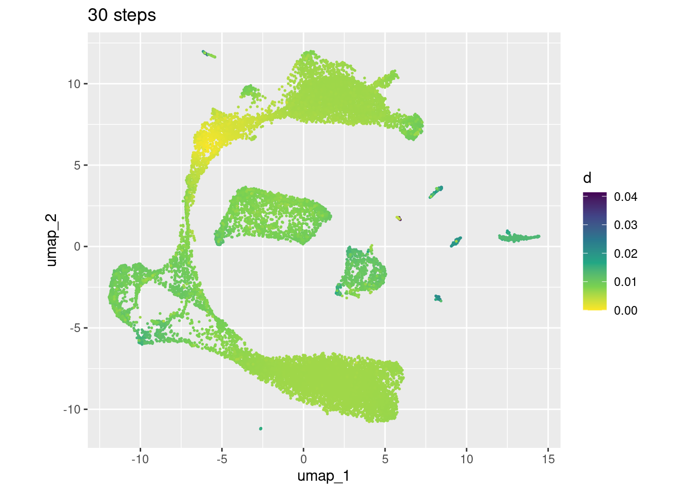
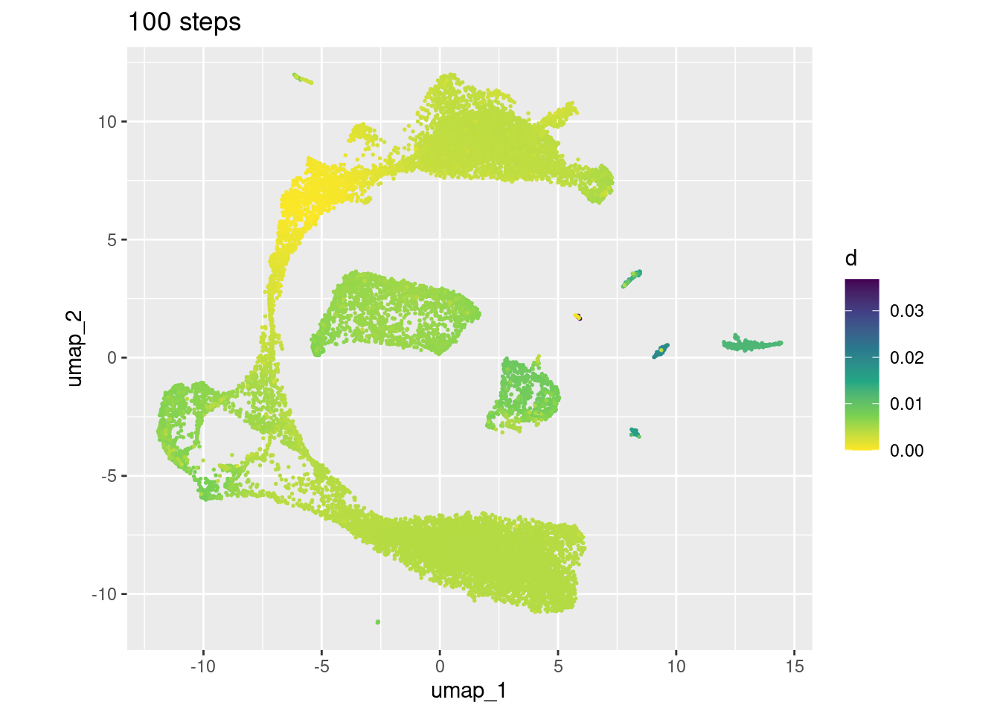
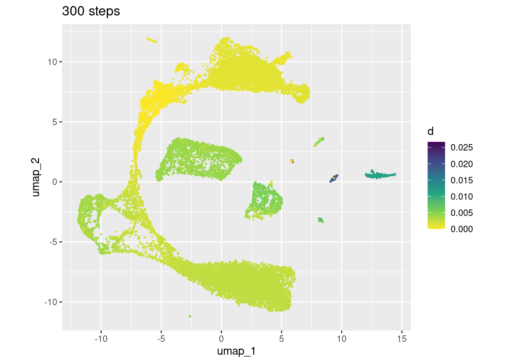
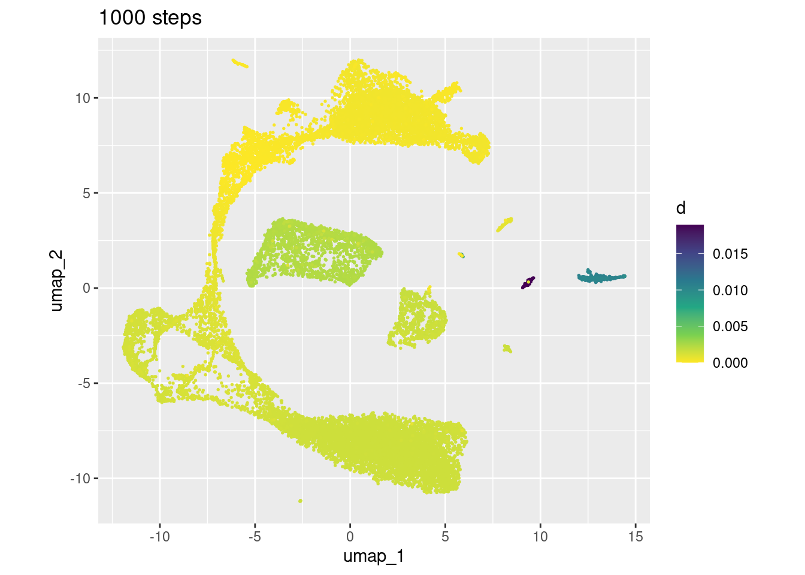
Pseudotime
We now want to define a pseudotime along the lineage, from cluster 0 to cluster 2 and on to 7.
We define a start cell and an end cell, by taking our cell (which is arguably somewhere in the middle) and find the cell with the largest distance to it within cluster 0 and 7, respectivelty.
We will work with \(\ell=300\):
l <- 300
xm <- as.matrix( invsqrtdegdiag %*% eigtrm$vectors %*% diag( eigtrm$values^l ) )
# distances to "intermediate" cell:
d <- sqrt( rowSums( t( t(xm) - xm[cell,] )^2 ) )Here is the distance of the cells in cluster 0 (the astrocyte / neuronal stem cell cluster, where the lineage starts) to our intermediate cell:
hist( d[seu$seurat_clusters==0], 100 )
abline(v=0.0013, col="orange")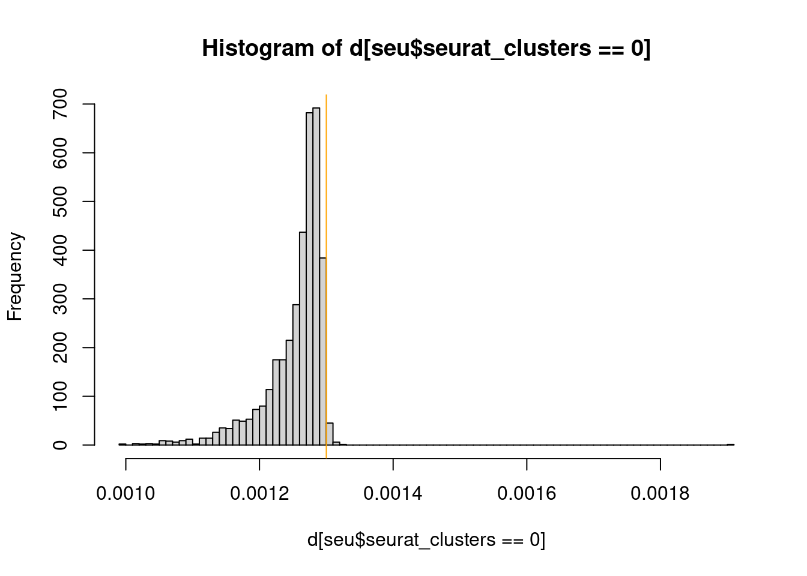
It seems reasonable to assume that the cells at the steep cliff are the actual start of the lineage and the cells further out or some outliers (perhaps cells that started into another direction)
start_cell <- which.min( ( d * (seu$seurat_clusters==0) - 0.0013 )^2 )Let’s also find a reasonable “end cell” in the neuron cluster 7:
hist( d[seu$seurat_clusters==7], 100 )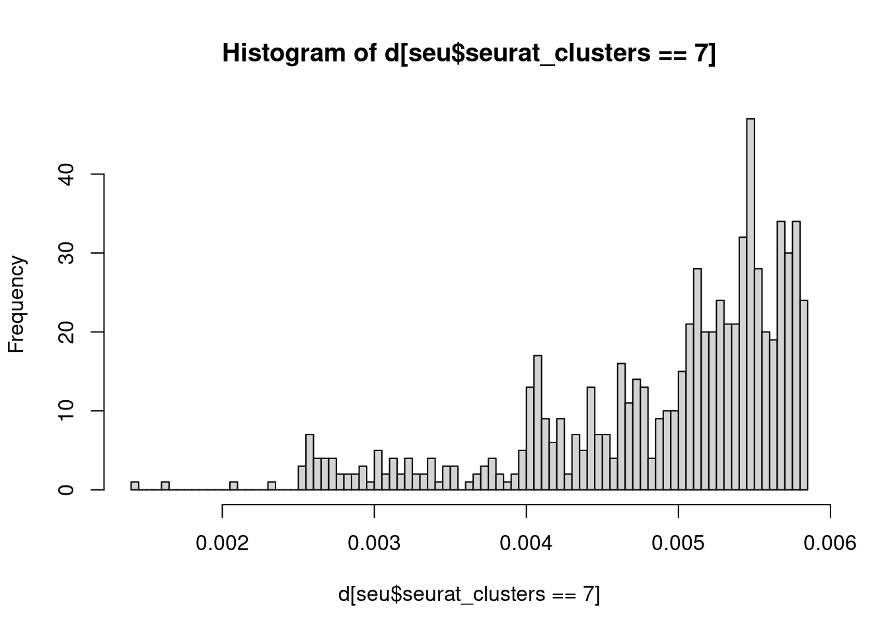
Here’ let’s simply take the last cell:
end_cell <- which.max( d * (seu$seurat_clusters==7) )Now, get distances to these two cells:
dist_to_start <- sqrt( rowSums( t( t(xm) - xm[start_cell,] )^2 ) )
dist_to_end <- sqrt( rowSums( t( t(xm) - xm[end_cell,] )^2 ) )tibble(
dist_to_start, dist_to_end,
cluster=seu$seurat_clusters ) %>%
mutate(
type = case_when(
cluster %in% c( 0, 3, 5, 1, 2, 7 ) ~ "lineage_straight",
cluster %in% c( 6, 11 ) ~ "lineage_cycle",
TRUE ~ "other" ) ) %>%
ggplot +
geom_point( aes( x=dist_to_end, y=dist_to_start, col=type ), size=.1 ) +
coord_equal()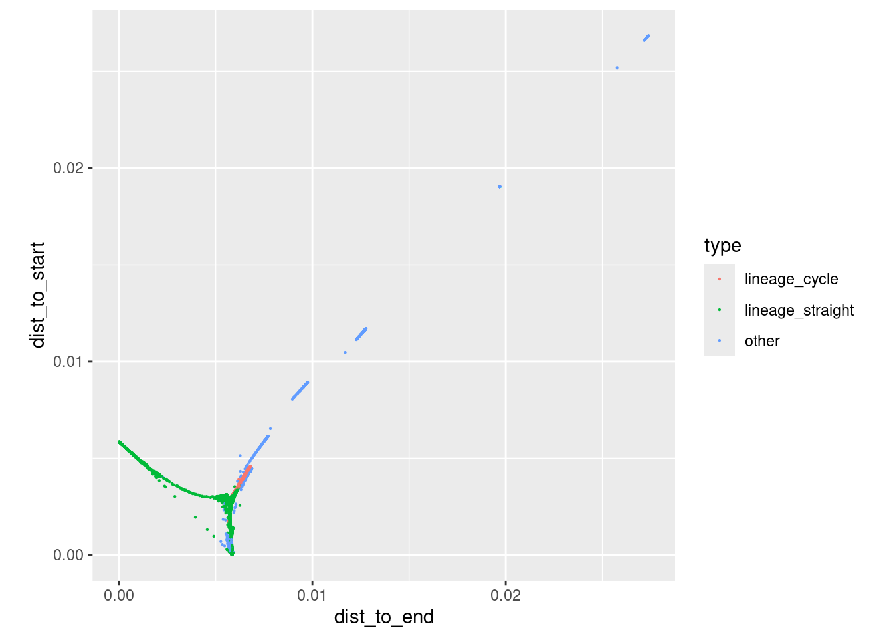
Let’s rotate this plot by 45°:
tibble(
dist_to_start, dist_to_end,
cluster=seu$seurat_clusters ) %>%
mutate(
type = case_when(
cluster %in% c( 0, 3, 5, 1, 2, 7 ) ~ "lineage_straight",
cluster %in% c( 6, 11 ) ~ "lineage_cycle",
TRUE ~ "other" ) ) %>%
ggplot +
geom_point( aes(
x = dist_to_start - dist_to_end,
y = dist_to_start + dist_to_end, col=type ), size=.1 )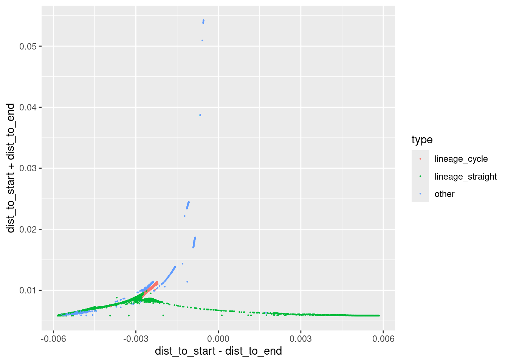
Our new x-axis should be suitable as pseudotime:
pseudotime <- dist_to_start - dist_to_endLet’s plot this into the UMAP:
Embeddings(seu,"umap") %>%
as_tibble() %>%
add_column( pseudotime ) %>%
ggplot +
geom_point( aes( x=umap_1, y=umap_2, col=pseudotime ), size=.3 ) + coord_equal() +
scale_color_gradientn( colours=rje::cubeHelix(100,r=4) ) 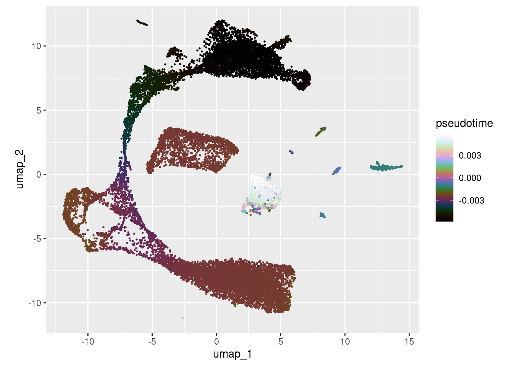
Before we dive into this, let’s also plot the y axis ofdist+to+start+dfist+to_end`:
Embeddings(seu,"umap") %>%
as_tibble() %>%
add_column( distsum = dist_to_start + dist_to_end ) %>%
ggplot +
geom_point( aes( x=umap_1, y=umap_2, col=distsum ), size=.3 ) + coord_equal() +
scale_color_gradient2( midpoint = .01, limits = c(0,.02), oob=scales::oob_squish )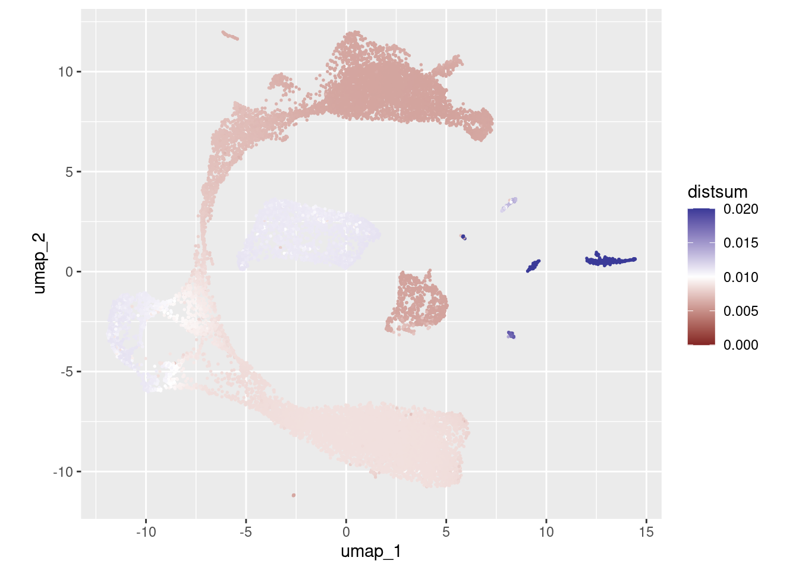
Comparing with the plot above, our pseudotime is valid for the red, white and perhaps the very faintly blue regions.
Comaprison to principal curve
Let’s recreate the principal curve that we used before for pseudotime.
As before, we calculate the principal curve using the cells in the lineage as input, without the cells from the two cycling cluster, and use smoothing splines with 10 degrees of freedom.
princurve::principal_curve(
Embeddings(seu,"pca")[ seu$seurat_clusters %in% c( 0, 3, 5, 1, 2, 7 ), ],
df = 10, approx_points=1000 ) -> prcWe again project the remaining cells onto outo the cells on the curve and assign to them the same pseudotime as the one of the nearest point on the curve:
FNN::get.knnx( prc$s, Embeddings(seu,"pca"), k=1 ) -> prc_nn
pseudotime_prc <- prc$lambda[ prc_nn$nn.index ]Here is the principal-curve-based pseudotime:
Embeddings(seu,"umap") %>%
as_tibble() %>%
add_column( pseudotime_prc ) %>%
ggplot +
geom_point( aes( x=umap_1, y=umap_2, col=pseudotime_prc ), size=.3 ) + coord_equal() +
scale_color_gradientn( colours=rje::cubeHelix(100,r=4) ) 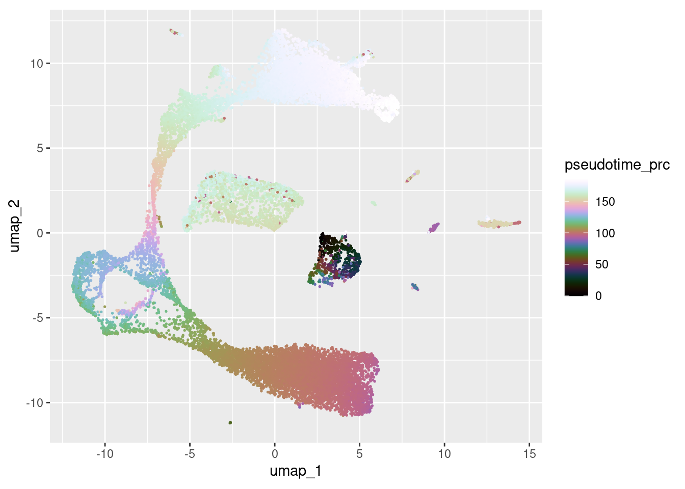
We can also compare the two:
tibble(
pt_diffusion = pseudotime,
pt_prc = -pseudotime_prc,
cluster = seu$seurat_clusters
) %>%
mutate(
type = case_when(
cluster %in% c( 0, 3, 5, 1, 2, 7 ) ~ "lineage_straight",
cluster %in% c( 6, 11 ) ~ "lineage_cycle",
TRUE ~ "other" ) ) %>%
ggplot +
geom_point( aes( x=pt_diffusion, y=pt_prc, col=type ), size=.2 )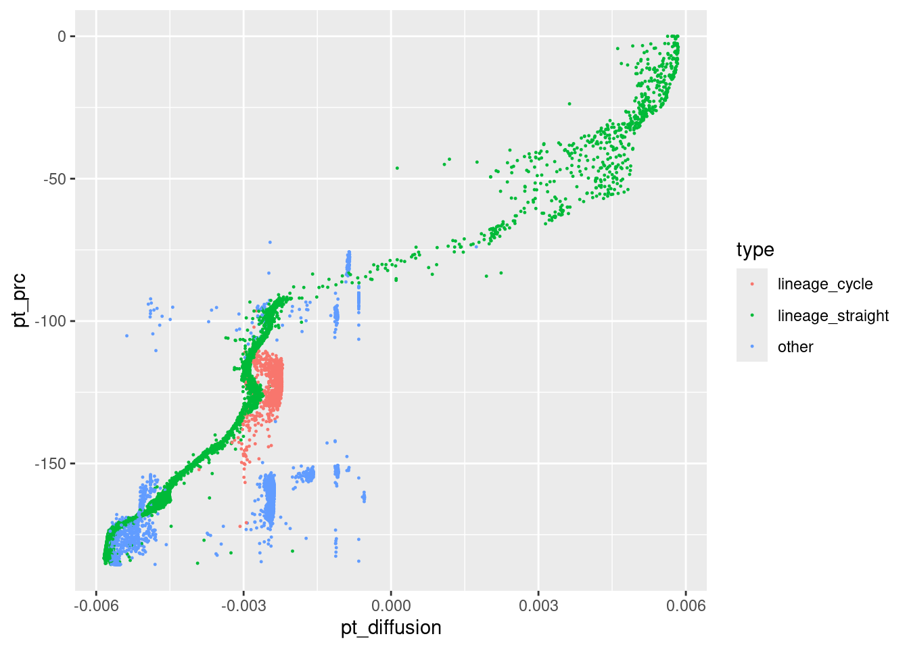
Diffusion space
The space of \(X_\ell\) can also be interpreted as an alternative to the feature space, called “diffusion space”. Using the first few components provides a dimension redution, the “diffusion map”.
For this to work well, our neighborhood graph should be connected.
Ours has two connection components, however, as is evident from the fact that our transition matrix has two unit eigenvalues:
head( eigtrm$values )[1] 1.0000000 1.0000000 0.9998821 0.9993076 0.9991653 0.9984226To make our live easier, let’s reduce the data to only the lineage cells
in_lineage <- seu$seurat_clusters %in% c( 0, 3, 5, 1, 2, 7, 6, 11 )Subset the adjacency matrix to these and recalculate the transition matrix and its spectrum
adjml <- adjm[ in_lineage, ][ , in_lineage ]
ncells <- nrow(adjml)
invsqrtdegdiag <- sparseMatrix( i=1:ncells, j=1:ncells, x=1/sqrt(rowSums(adjml)) )
eigtrm <- RSpectra::eigs_sym( invsqrtdegdiag %*% adjml %*% invsqrtdegdiag, k=10 )
x300 <- as.matrix( invsqrtdegdiag %*% eigtrm$vectors %*% diag( eigtrm$values^300 ) )as_tibble( x300[,2:3 ] ) %>%
add_column( cluster = seu$seurat_clusters[in_lineage] ) %>%
ggplot +
geom_point( aes( x=V1, y=V2, col=cluster ), size=.1 ) + coord_equal()Warning: The `x` argument of `as_tibble.matrix()` must have unique column names if
`.name_repair` is omitted as of tibble 2.0.0.
ℹ Using compatibility `.name_repair`.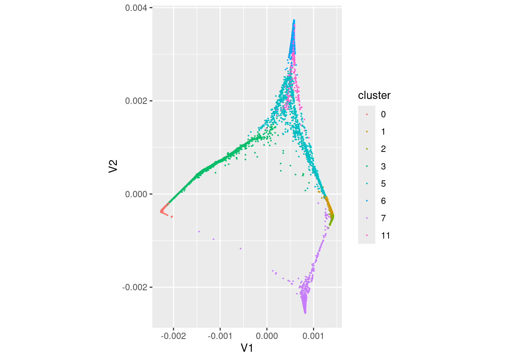
For comparison, the UMAP with the same c
as_tibble( Embeddings(seu,"umap")[in_lineage,] ) %>%
add_column( cluster = seu$seurat_clusters[in_lineage] ) %>%
ggplot +
geom_point( aes( x=umap_1, y=umap_2, col=cluster ), size=.1 ) + coord_equal()
References
The idea of diffusion distances and diffusion maps has been introduced in this paper:
- Coifman and Lafon (2006): Diffusion Maps. Applied and Computational Harmonic Analysis, Vol. 21, Pages 5-30. doi:10.1016/j.acha.2006.04.006
Applying these ideas to single-cell data is explored in
Haghverdi, Büttner, Theis (2015): Diffusion maps for high-dimensional single-cell analysis of differentiation data Bioinformatics, Vol. 31, Pages 2989–2998, doi:10.1093/bioinformatics/btv325
Haghverdi, Büttner, Wolf, Buettner, Theis (2016): Diffusion pseudotime robustly reconstructs lineage branching Nature Methods, Vol. 13, Pages 845–848
Angerer, Haghverdi, Büttner, Theis, Marr, Buettner: destiny: diffusion maps for large-scale single-cell data in R, Bioinformatic, Vol. 32, Pages 1241-1243, doi:10.1093/bioinformatics/btv715